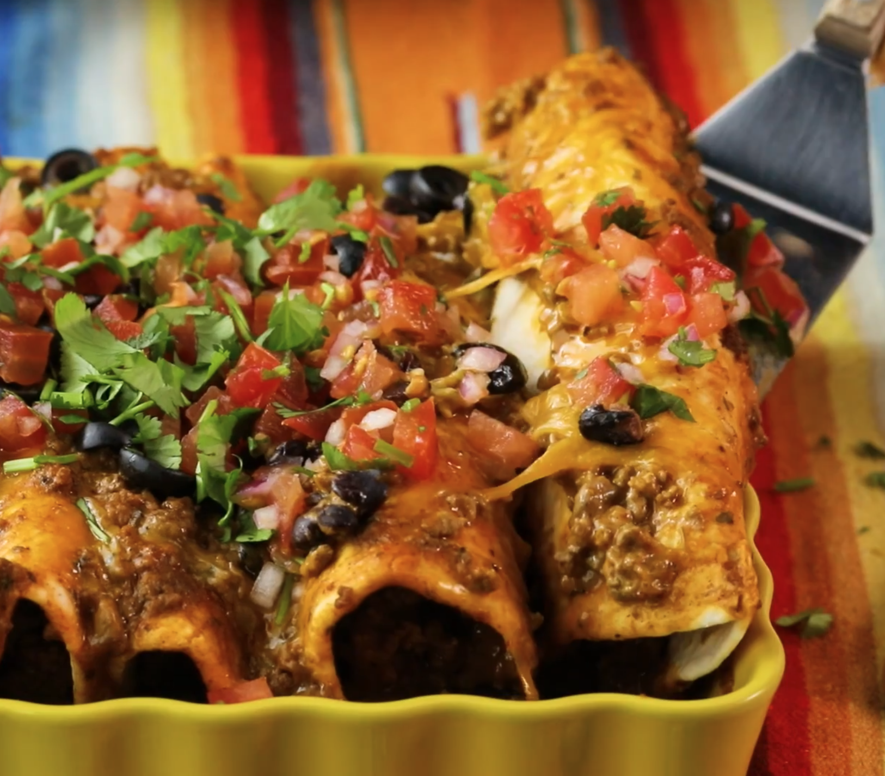

Beef Enchiladas

Description
These enchiladas are absolutely amazing! Truly a recipe your family will love.
Ingredients
- 2 pound ground beef
- quarter medium onion
- cup cheddar cheese
- dried parsley
- enchiladas sauce
Steps
- Preheat oven to 350 degrees F (175 degrees C).
- Cook and stir ground beef with onion in a skillet over medium heat until meat is crumbly and no longer pink, about 10 minutes. Drain grease. Stir 1 cup Cheddar cheese, sour cream, parsley, taco seasoning, oregano, and black pepper into the ground beef until cheese has melted. Mix in enchilada sauce, chili powder, garlic, and salt; bring to a simmer, reduce heat to low, and simmer until meat sauce is slightly thickened, about 5 minutes.
- Lay a tortilla onto a work surface and spoon about 1/4 cup of meat sauce down the center of the tortilla. Top meat sauce with 1 tablespoon black beans and a sprinkling of black olives. Roll the tortilla up, enclosing the filling, and lay seam-side down into a 9x13-inch baking dish. Repeat with remaining tortillas. Spoon any remaining meat sauce over the enchiladas and scatter any remaining black beans and black olives over the top. Sprinkle tortillas with 1/4 cup Cheddar cheese.
- Bake in the preheated oven until cheese topping is melted and enchiladas and sauce are bubbling, 20 to 22 minutes. Let stand 5 minutes before serving.